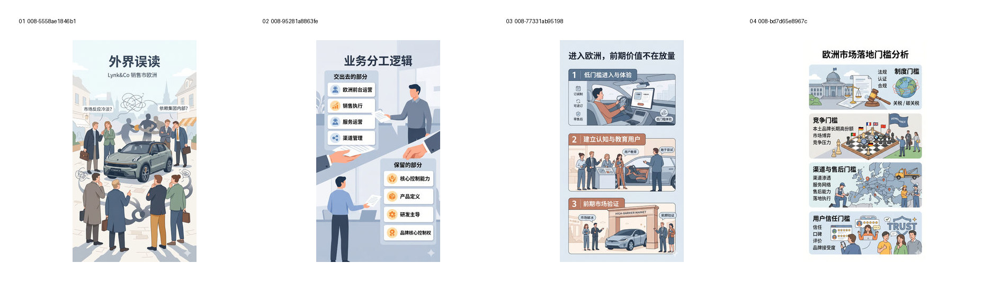
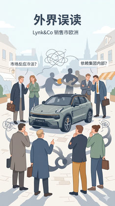
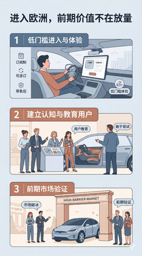
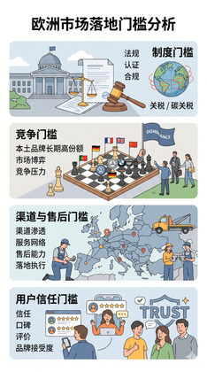

验证 H-default 是否能成为全系统默认主线。
Evidence: references/text2pic/conversations/008-Branch-2-V1视觉系统设计/IMAGE_MANIFEST.md § 2. 测试目的 + 4. 用户具体评价及规则影响


936aab54f7ce85dd…
3731c24483d70898…

3e69cf37466a5325…

22daf4ebf6d612f9…